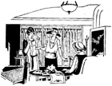
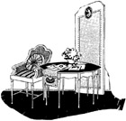
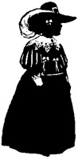

1926—The New-Way Course in Fashionable Clothes-Making
Lesson 50—Furnishings
Furnishing the Shop
Let us pretend that you are going to open a little shop of your own. You may not, of course—but if you ever do you will want to know how to furnish it, won't you? You will want to know what furniture you will need, how the shop should be divided, how to arrange your stock.
Always remember, when purchasing your furnishings, that a pretty dress looks prettier in an attractive environment. Do not make the mistake of sacrificing effect to economy. Do not be extravagant, of course, but purchase the most effective and attractive furniture within your means. Avoid the commonplace—in your furniture as well as in your styles.
If you expect to transform one of your rooms at home into a dress shop, you will need a medium-size table and several chairs preferably of wicker with bright cretonne cushions. The dresses should be out of sight behind a cretonne curtain. A long slender mirror should stand in the best possible position so that the light is reflected to the best advantage. A corner of the room should be screened off for fittings, alterations, etc.
If you expect to open a shop, you will open a small one or a large one according to your plans and circumstances. But whether it is small or large, the shop should be divided into a reception or sales room, a workroom and a fitting room. If the shop is very small, the workroom and fitting room may be in one, with just one or two screens or partitions arranged for the convenience of the customers.
For the salesroom, gray and white, or gray and pale blue, or other neutral shades as the color scheme will be the best background for the gowns displayed. Hand painted decorations on the woodwork is always effective. The walls may be lined with glassed-in cases for the stock, or there may be cretonnes to keep the dresses from becoming dusty or soiled. Each dress should be hung on its immaculate white or pink hanger. Most shops have a medium-sized round table in the center of the room with magazines arranged on it, and several inviting-looking chairs grouped near-by. Such touches as a bird chirping merrily in its cage near the window, an odd lamp to cast a mellow glow over the room or an unusual print or two on the wall add charm to the shop and do not involve any very great expense. Indeed, we suggest that when you open your shop you depend upon small touches such as these to make it attractive, rather than investing in large and expensive furnishings.
All rooms in the dress shop should be light, airy and well ventilated. There should be plenty of heat in the winter and plenty of fresh air in the summer.
It would be impossible, and impractical to give complete detailed information as to the exact furnishings of the shop. This depends largely upon your own requirements and upon the size and shape of the shop. Try to have everything in harmony—from the drapings in the display window to the pictures on the wall. Yes, you may have a picture or two, attractively framed. It always adds interest to the room—and that is what you should strive for, an interesting and attractive shop.
Wall decorations should be simple. Soft buff, cream, light blue and other light shades are appropriate. The colors used in both work room and sales room should be soft, restful and pleasing to the eye. The floors, if of wood, should always be kept immaculate, and in fact, everything about the shop should suggest absolute neatness and cleanliness.
Supplies
It is not only the furniture you must purchase when you open your dress shop. You will need sufficient supplies to tide you over in the first season at least. You must not be handicapped by lack of necessary findings, materials, etc.
- buttons
- button molds
- cable cords
- chalk (tailor's, white and colors)
- china silk for linings (black and white)
- coat weights
- black and white sewing cotton (practical numbers)
- dress snaps, hooks and eyes
- seam binding
- sheet wadding
- silk thread (black and white)
- skirt belting (black and white)
- shields (large and small)
- linen tape for coats
- pins (purchased by the box)
- needles
- basting cotton (white)
- buttonhole twist (black and white)
And of course, you will require a sufficient supply of all the materials you expect to convert into dresses, blouses and wraps. You will need taffetas and velvets and satins. These materials should be purchased according to your needs. Purchase your stock wisely. Do not purchase too much of one material and too little of another. Proportion your available capital in such a manner that you will have enough for everything you need, even if you can purchase only a little of each thing. Do not make the mistake of purchasing in the Fall what you will be able to sell only in Summer. Be seasonable as well as sensible—that is the only sure way to achieve success.
Many firms in our larger cities sell to dressmakers at prices known as dressmaker's wholesale. The representatives of these firms will call regularly with samples of everything both foreign and domestic, necessary for the making of dresses. The greatest advantage in buying from firms of this kind is they sell to no one but dressmakers and have all novelties at least six months in advance of the department stores. Their prices are always lower than retail. If your credit is established in your home city you will find you can buy on sixty days time from these firms.
As for the dresses made right in your shop, have them new, clever, up-to-date. Do not tolerate commonplace, ordinary styles. Insist upon the kind of dresses and blouses that will earn for you and your shop the reputation of originality, distinction. And do not have several of one style. Let your customers see that your effort is to give them clothes that will be individually becoming—and certainly you cannot claim to do this when the same dress you sell them is sold to others of a different type. Be sincere in your effort to please the customer—and the customer will return.
It is important that you keep your stock fresh, new, attractive. Keep the dresses in a glass case, or covered with a cretonne curtain. Materials should be kept carefully packed away in the workroom in a chest of drawers provided for the purpose. A piece of velvet, satin or taffeta should not be allowed to stay folded in one position for a long time, but should be taken out occasionally and refolded. Otherwise an unsightly crease will show.
When you find that you have a dozen or more dresses that are beginning to look shop-worn and become the least bit out-of-date, have a sale. Call it a Spring Sale, if you wish, a Bargain Sale, or a Clearance Sale—but make it a real sale. Hold this sale early enough for the sale gowns to be suitable for immediate wear. Out of season gowns do not sell well even at very low prices. Cut the prices down as low as possible and rid your shelves of the dresses quickly. This will give you sufficient space for new, up-to-date dresses. In this way your stock will always be fresh, attractive and up to the minute.
Boxes for Packing
You will need a supply of boxes for the packing of dresses, blouses, skirts, etc. If you expect to sell dresses only, one size box will suffice. But if you expect to sell wraps, suits, skirts, and other wearing apparel, purchase a small supply of the three most popular sizes of boxes.
It is not wise to have your name printed on the boxes right at first. Perhaps your business will not be a success; perhaps for some reason it may become necessary to change the name. At any rate, it is wiser to purchase just a few plain boxes at first until the business is well established.
Having ascertained the standing of one's business and decided that it is time to have boxes with one's name on them, proceed to have prices quoted on the kind of boxes you want. Write or call on your nearest paper company and tell them what kind of boxes you want. They will submit samples and quote prices. Choose a good quality, and of the type that is in keeping with the color scheme and general appearance of the shop.
It always pays to invest in attractive boxes, as they are kept a while in the homes of the customers and serve as constant reminders of the shop. The supply of boxes should be kept in the workroom, high up on a shelf where they will not be soiled or crushed.
Magazines
Every owner of a dress shop should subscribe to the recognized style magazines. Expense should not be considered in the matter of gaining all the best available fashion literature, as it is of inestimable value in the business. Like a breath from Fashion Centers of the world, it brings with it all the newest and more clever ideas in dress. More eloquently than the designer himself it tells of all the new whims of fashion, the new demands of the public. Through the fashion magazines you will keep up-to-date; and their pages will offer you many valuable suggestions for your own original style creations.
Select your magazines wisely. Choose those magazines that best serve your purpose. Do not be content with just one periodical—choose several so that your variety of styles is large. Many owners of dress shops subscribe not only to domestic magazines but to French periodicals which tell of the advanced styles for the coming seasons.
Do not purchase your magazines individually, but subscribe to them for a period of a year or more. In this way you will save money, and the longer your subscription the greater your saving. You will also save the trouble of going to the news stands for your copy. When your fashion periodicals arrive, study them carefully. Jot down notes of ideas that occur to you as you read. Check the garments that appeal to you—that you would like to interpret in your own way and with your own color scheme. Notice the new trimming innovations, the new materials, the new sleeves and girdles. Do not let any details escape you. Time spent in reading the fashion magazines may be counted as time well spent. As soon as you stop following the fashions, your business will begin to deteriorate.
After you have read the magazines carefully and gotten out of them everything possible for your own requirements, pass them on to any dressmakers you may have working for you. Let them see the new styles, the pictures, the style forecasts. The magazines will give them inspiration. And finally, when everyone has seen the magazines, place them on the table in the reception room where the customer may glance through them if she is so inclined.
At the end of the month, when the new magazines arrive, file these old ones away and replace them by the new ones. It is not practical to throw them away until they are about six months—or even a year—old, as you may remember having seen a style somewhere, an elusive style that has somehow escaped you, and you will be able to find it by glancing through the old magazines. A discarded packing case divided into several sections and covered with cretonne makes an ideal magazine file.